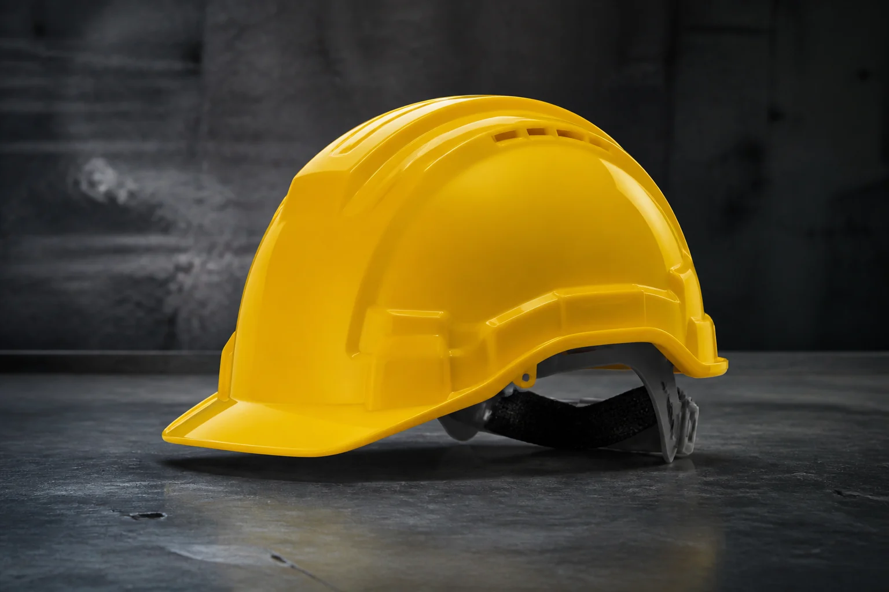
Голова · второй класс
Каски и шлемы
Защищают голову от ударов и падающих предметов.
Профессии: строители, монтажники, работники предприятий.
Примеры: каски, шлемы, каскетки, подшлемники.
Одиннадцать типов экипировки, опасные факторы и примеры профессионального применения.
Показано: 11

Защищают голову от ударов и падающих предметов.
Профессии: строители, монтажники, работники предприятий.
Примеры: каски, шлемы, каскетки, подшлемники.
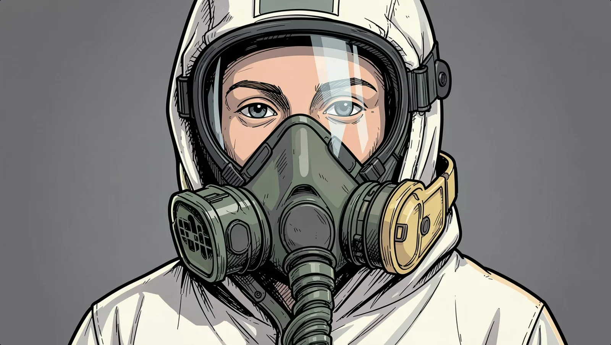
Предотвращает попадание газов, паров, пыли и аэрозолей.
Профессии: шахтёры, химики, маляры, сотрудники МЧС.
Примеры: респираторы, противогазы, самоспасатели.
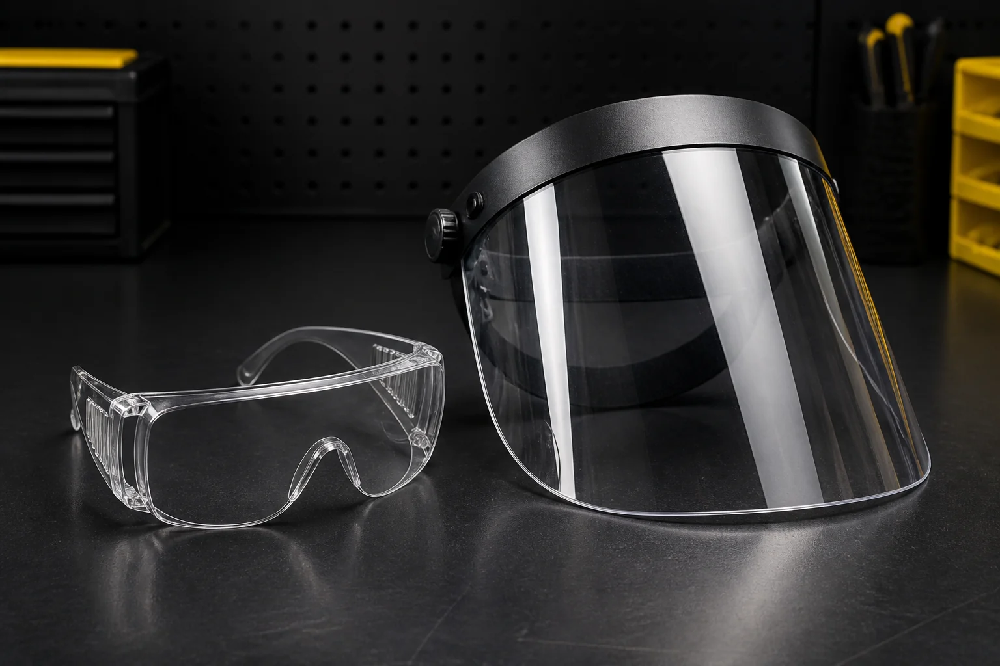
Защищают от осколков, искр, брызг и излучений.
Профессии: токари, плотники, слесари, сварщики.
Примеры: открытые и закрытые очки, лицевые щитки, экраны.
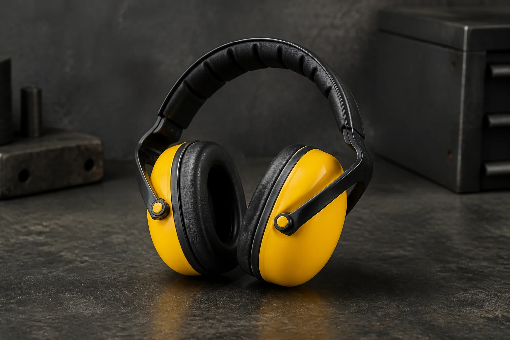
Снижает воздействие опасного производственного шума.
Профессии: работники аэродромов, кузнецы, операторы буровых.
Примеры: наушники, противошумные вкладыши, шлемы.
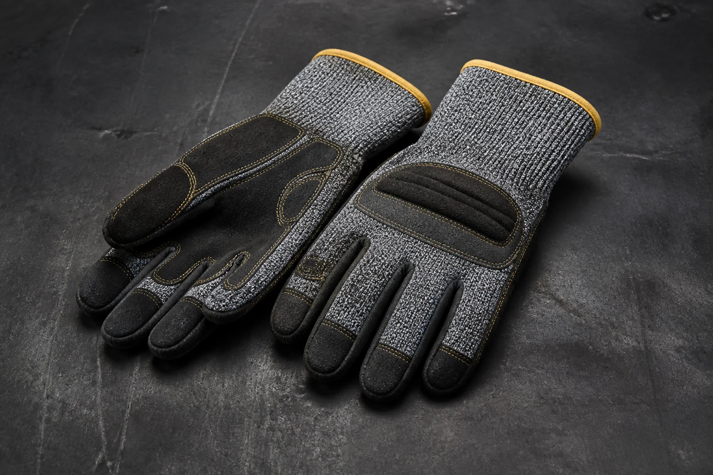
Защищают от порезов, проколов, вибрации и других факторов.
Профессии: электрики, металлурги, плотники, грузчики.
Примеры: стойкие к порезам и диэлектрические перчатки, рукавицы.
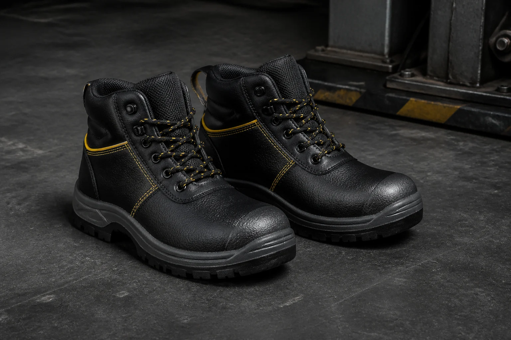
Защищает от ударов, проколов, влаги и температур.
Профессии: строители, грузчики, металлурги.
Примеры: сапоги, ботинки, бахилы, обувь с защитным подноском.
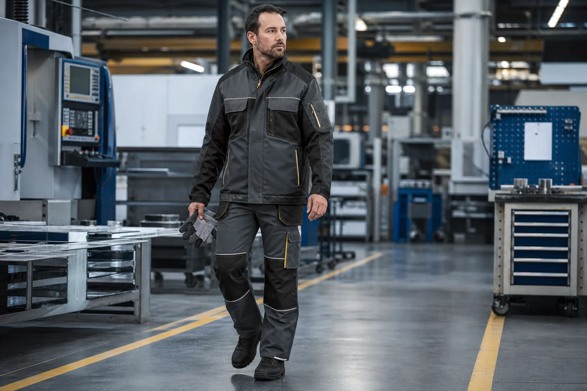
Защищает от температурных, механических и химических факторов.
Профессии: сварщики, нефтяники, сталевары, строители.
Примеры: костюмы, куртки, брюки, комбинезоны, плащи.
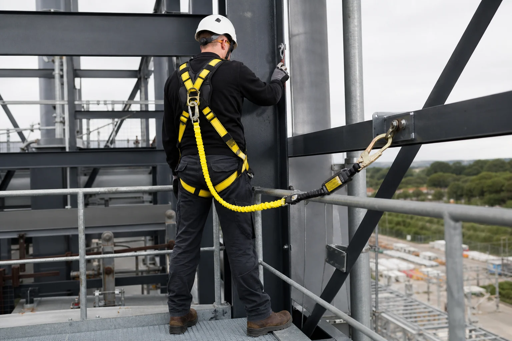
Фиксируют человека и снижают последствия возможного срыва.
Профессии: промышленные альпинисты, монтажники, работники на высоте.
Примеры: привязи, стропы, амортизаторы, блокирующие устройства.
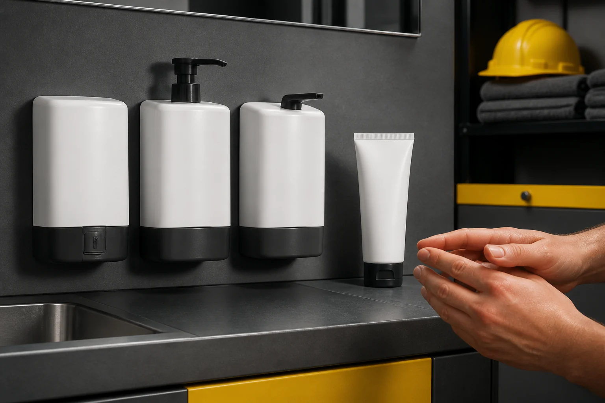
Помогает снизить воздействие загрязнений и отдельных производственных факторов.
Применение: работы с загрязняющими веществами и неблагоприятной средой.
Примеры: защитные кремы, гели и очищающие пасты.
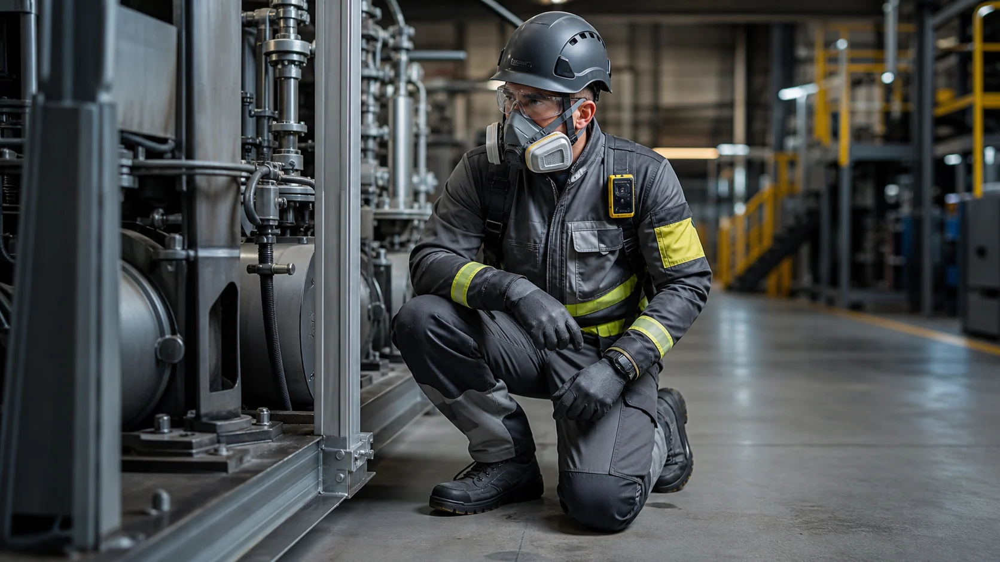
Объединяют несколько совместимых элементов защиты в одну систему.
Применение: опасные производства и сочетание нескольких рисков.
Примеры: согласованные комплекты и интегрированные защитные системы.
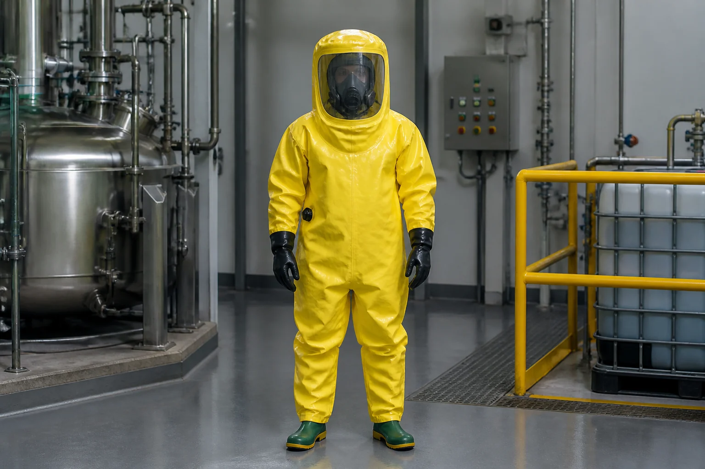
Изолируют человека от окружающей среды при соответствующем уровне риска.
Применение: химические производства, аварийные и специальные работы.
Примеры: герметичные костюмы с совместимой защитой дыхания.